Every picture below is the real SyncView page, run on a laptop with made-up posts and notes, with the proposed badges switched on for the screenshot only. Nothing is live yet.
Orange: a change requestBlue: a client commentGrey: someone on the teamViolet: KasperOutline: read, but still needs doing
Three things to decide
Decision 1 · The number on the Messages button
The number counts conversations that have something new for you.
If three posts each have a new client comment, it says 3. Change requests never count here: they live on the cards. When nothing is new but a client is still waiting for your answer, the number shows as an outlined ring instead of a filled dot. Hover the button and it lists what is waiting, in words.
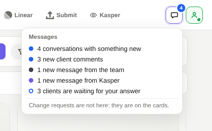
Something new: a filled count, and hovering says what it is.
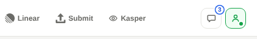
Nothing new, but 3 clients wait for an answer: an outlined count.
Recommendation: yes, count conversations, and use the outline for "waiting for your answer".
Decision 2 · Answering later
Opening Notes clears "new", but a client's comment keeps saying "Waiting for your answer".
It stays that way until someone on the team replies or clicks "No reply needed". So you can read everything now and answer one message later without losing it. Mark unread is still there if you want the whole post back as new.
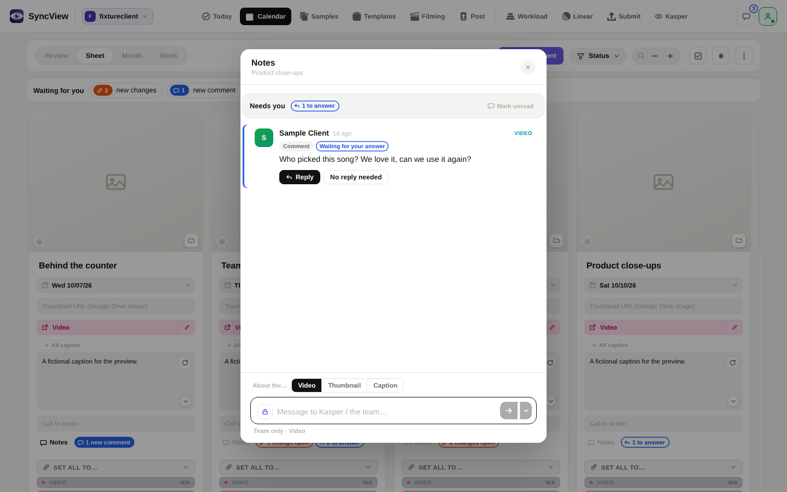
Read yesterday, still waiting: Reply and No reply needed are right under it.
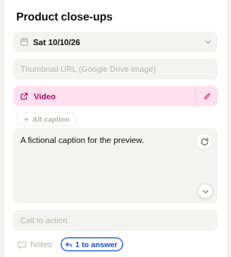
On the card, an outlined "1 to answer" stays until it is answered.
Recommendation: yes, automatic "waiting for your answer", with Mark unread kept. A "remind me later" button can come later if needed.
Decision 3 · A summary line above the calendar
One line above the cards says what is waiting for you on this client.
Click a part of it to see only those posts, click again to see all. Looking at it marks nothing as read.
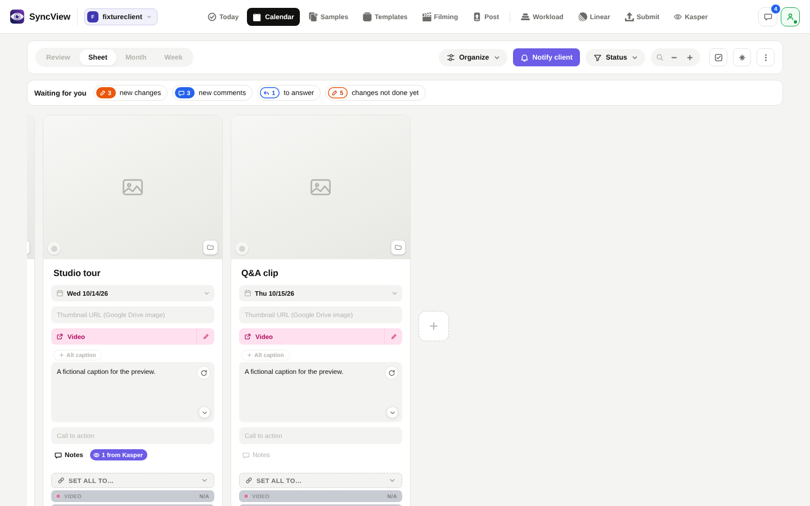
New changes, new comments, to answer, changes not done yet.
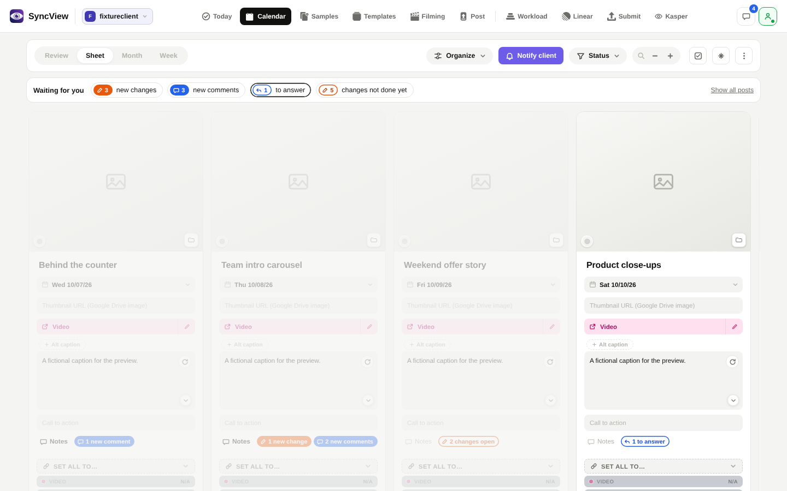
Clicked "to answer": the other posts fade back.
Recommendation: yes, add the line.
Already decided by you
Change requests stay out of Messages. In a chat they show as one line with an Open card button.
The post's SMM and admins see "waiting for your answer". One reply from anyone on the team clears it for everyone.
Reading on your phone clears the laptop within 30 seconds.
The colours above, one "read" for everything, and a teammate's reply to a client counts for you in grey.
1. The calendar
Why it is obvious: the words on each card say what is there ("2 new changes", "1 new comment"); today a single orange dot means anything.
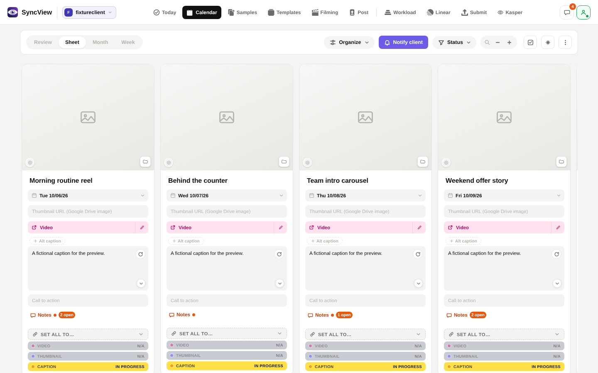
Today: a dot and "2 open". You cannot tell a comment from a change.Proposed: what it is, in words, plus the summary line.
Light
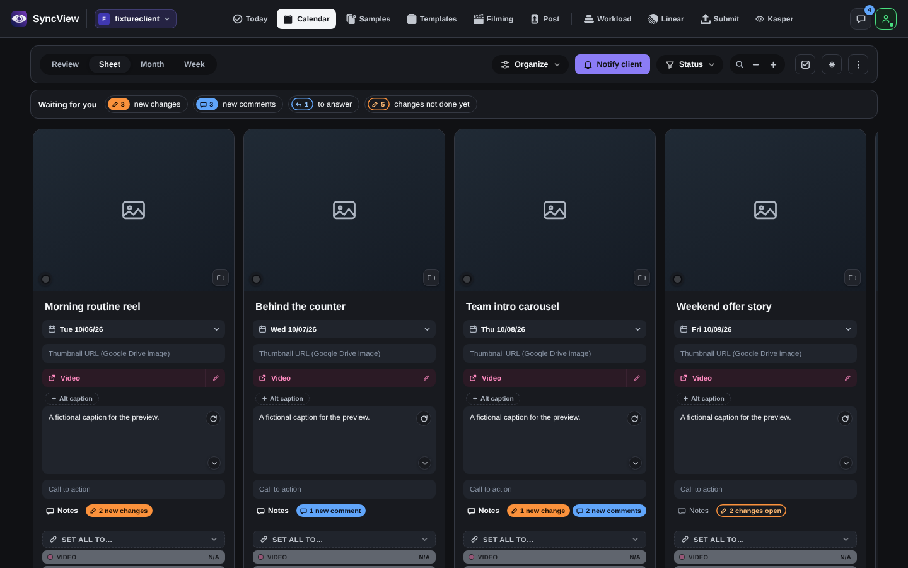
Dark
2. Every kind on a card
Why it is obvious: a filled colour means new, an outline means read but not finished, and each one says its own name.
3. Hover: what it is before you open it
Why it is obvious: each line starts with what it is ("New change", "New comment"), then who, which part and the first words.
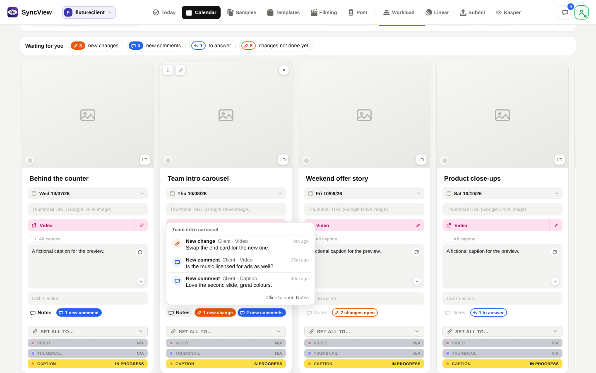
Light
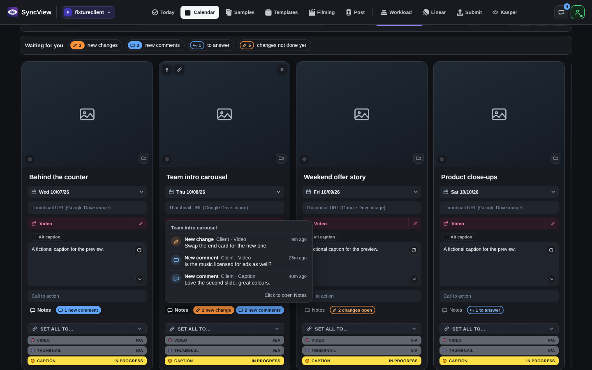
Dark
4. Notes on a card
Why it is obvious: a "Needs you" line at the top, a label on each note, and the buttons that matter (Reply, No reply needed, Mark done) always on screen, not only on hover.
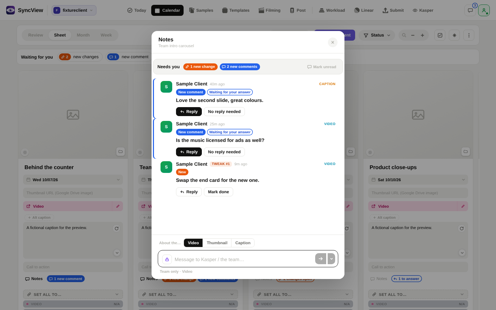
Two new comments waiting for an answer, one new change.
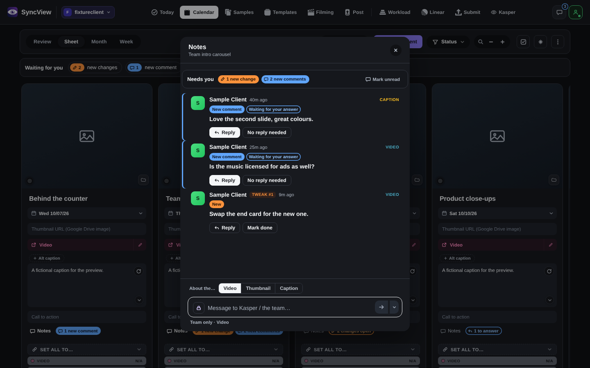
Dark
Read earlier, still waiting for an answer.
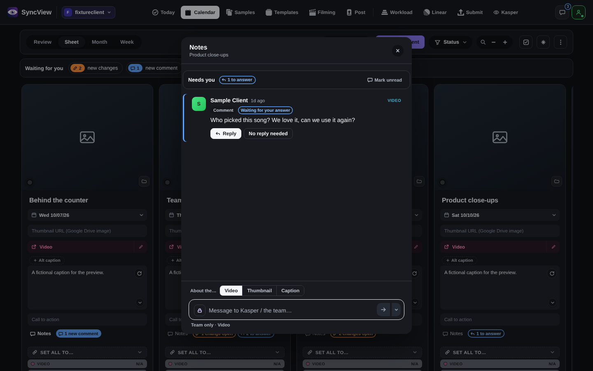
Dark
5. The Messages button
Why it is obvious: the number sits on the corner and never moves the icon; hovering says, in words, what the number is.
Today
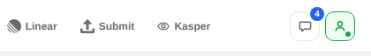
Proposed
Hover, light
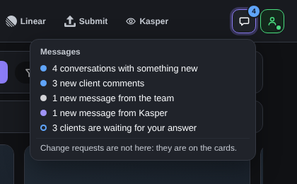
Hover, dark
6. The Messages list
Why it is obvious: three plain tabs, New, To answer and All, and each row says what is new in it.
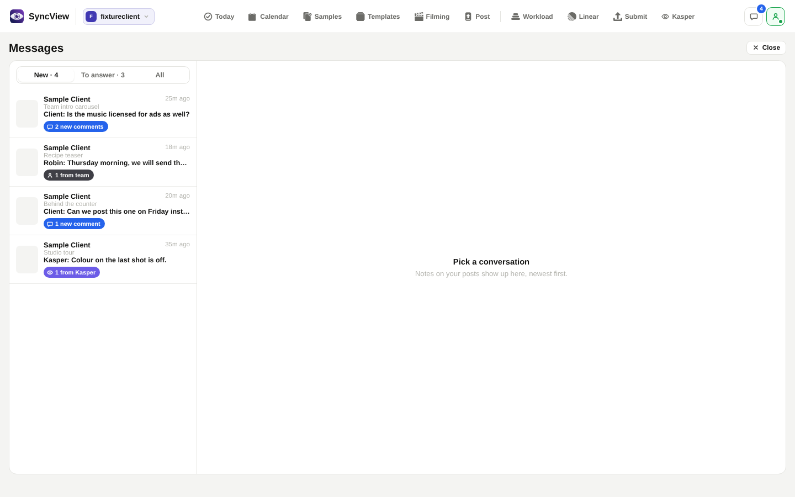
New
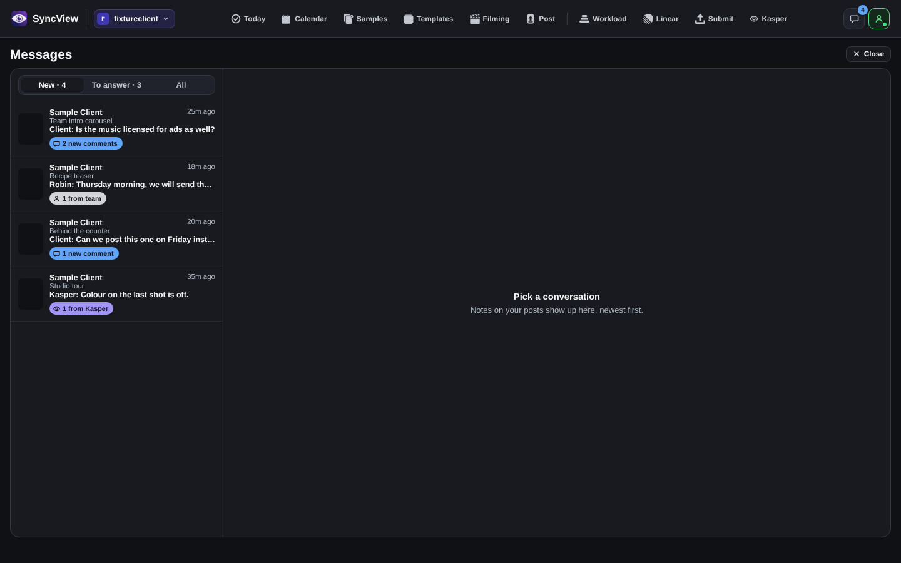
New, dark
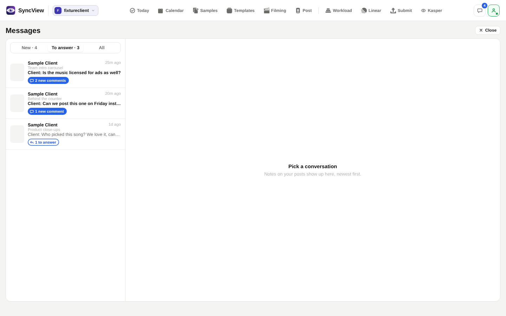
To answer: only conversations where a client waits for you.
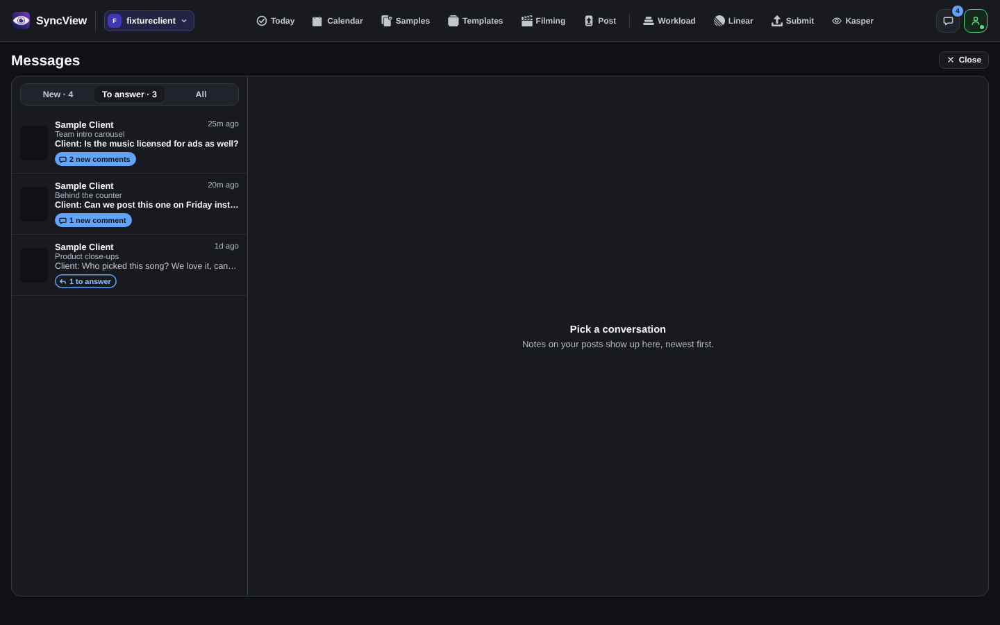
To answer, dark
7. A chat
Why it is obvious: each message says if it is new or waiting for you, Reply and No reply needed sit right under it, Mark unread and Open card are plain buttons at the top, and a change request is one orange line pointing to the card.
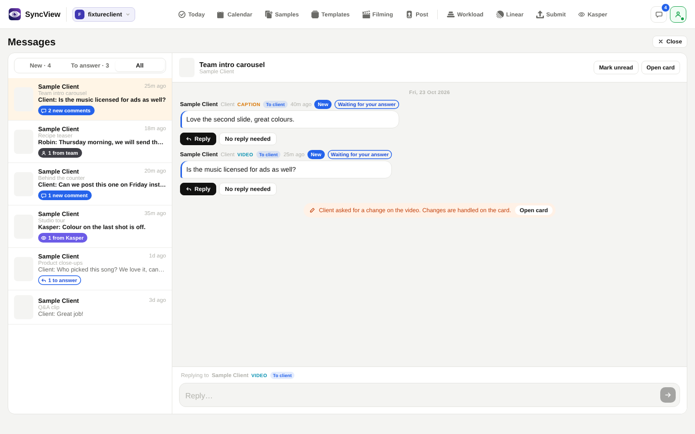
Light
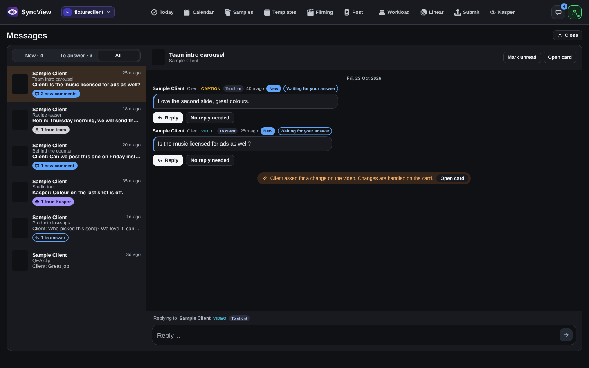
Dark
8. On a phone
Why it is obvious: today a phone tile shows no notes at all. Now each tile carries the same colours, with an icon and a number, and a long press says it in words.
How these were made: the real page, built from the code on GitHub, served on a laptop with every server answer faked and no live data. A small switch that only the screenshot script loads adds the proposed badges. Pull request #2299 has the details.